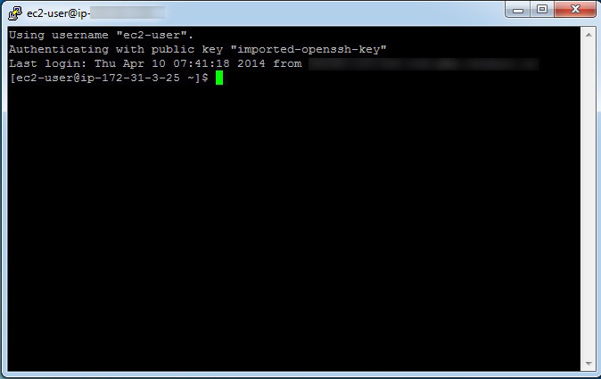

Quick-Start Guide to Using PuTTY
- Using PuTTY in Simple Steps
- Accessing AWS Virtual Machines via SSH on Windows Using PuTTY and PuTTYgen
Using PuTTY in Simple Steps
This guide is intended for Windows users who are not accustomed to using SSH, or need some additional support for understanding how to work with SSH from their machine (e.g. challenges with key pairs).
It describes how to start using the free, open-source program PuTTY, to securely connect a client computer to a remote Linux/Unix server.
Many of the tutorials to follow will refer to using PuTTY, which is a popular SSH client for Windows workstations.
The important thing about PuTTY is that it is a secure way to connect a client to a server, using the SSH network protocol. It has a powerful and easy-to-use graphical user interface (GUI) and is used to run a remote session over a network.
What is SSH? It is short-form for “Secure Shell,” which means it creates a secure channel over an insecure network—like the internet, for example.
How does SSH do this? By encrypting the communications between the client and the server, using public-key cryptography, which means that a key-pair is generated—one of them public, and the other private, or secret, known only to the user.
Since CFEngine is a client-server enterprise software system, it is essential to access the servers securely. This is true whether the CFEngine system is run on a cloud platform, like Amazon Web Services and many others—or on a private network.
That is where PuTTY comes into the picture, since it uses SSH protocol for connecting a client to a server.
The PuTTY software consists of two separate programs PuTTY and PuTTYgen: They can be downloaded at http://www.chiark.greenend.org.uk/~sgtatham/putty/download.html
PuTTYgen is used to generate the encryption key pair while PuTTY, a command-line interface, is used to securely access the CFEngine server, or hub, from a remote client machine, which is called a host in CFEngine terminology.
PuTTYgen is used only when setting up a new client machine on the CFEngine hub. The CFEngine hub will already have an encrypted key-pair that was created when setting up the hub. (See the tutorial, Installing CFEngine on RHEL Using AWS)
The following steps describe how to get the client machine, up and running using PuTTYgen and PuTTY. There are two distinct steps to this process:
Step 1. Use PuTTYgen to create an encrypted key-pair in the .ppk file format that PuTTY uses.
(It is important to note that the key-pair on the hub will probably be in a file format that is different from the PuTTYgen .ppk file format. For example on Amazon Web Services (AWS) and many other cloud computing services, the key-pair file format created when setting up the server (_hub_) will be in the .pem file format.)
Step 2. Configure the PuTTY application in order to securely access the CFEngine hub.
Step 1. consists of the following sequence: First, launch PuTTYgen by double-clicking on the puTTygen icon in the Windows programs menu tree; (It should be inside the PuTTY folder that was created when the PuTTY was downloaded and installed.)
Next, download the key-pair and save it on the local hard disk in the .ppk file format.

a. Click Load. The following Load private key window will pop up:

b. In the Load private key window select All Files (*.*) in the drop down menu next to the File name input box.
c. Navigate to the location on disk where the public-key file was downloaded in earlier steps, in this case a .pem file. Click Open. The following window will appear:
d. Enter a Passphrase and confirm the Passphrase. If no Passphrase is desired, leave those fields empty.
e. When the key has been loaded click the Save private key button.
f. If saving without a Passphrase a dialog box will pop up; click yes to save the key without a Passphrase
g. Now close PuTTYgen.
Accessing AWS Virtual Machines via SSH on Windows Using PuTTY and PuTTYgen
Get PuTTY and PuTTYgen
- To get PuTTY and PuTTYgen, first go to
http://www.chiark.greenend.org.uk/~sgtatham/putty/download.html and either:
- Download and install using the PuTTY binaries installer
- Or, download PuTTY and PuTTYgen individually
Prepare Private Key Using PuTTYgen
- After the binaries have been downloaded and/or installed either:
- Double click
puttygen.exefrom the download location, if downloaded directly. - Or, if the PuTTY installer was used above, one of either:
- Press the
Windowskey +Rkey and then typeputtygenin the field namedOpen. Then press theEnterkey or clickOK. - Alternatively, double click puttygen.exe under
C:\Program Files (x86)\PuTTY(when using Windows 64 bit) orC:\Program Files\PuTTY(when using Windows 32 bit).
- Double click

The Puttygen Interface. You will load the .pem file that you created in AWS.
- On the PuTTYgen interface click the load button.
- In the Load private key window select All Files (*.*) in the drop down menu next to the File name input box.
- Navigate to the location on disk where the .pem file was downloaded in earlier steps.
- When the key has been loaded click the Save private key button.
- When prompted with a warning about saving without a passphrase, click yes.

The Puttygen popup window. Click Yes, to proceed without a passphrase. You can also protect your private key with a passphrase that you enter into Key Passprhase and Confirm Key Passphrase.
- Finally, navigate to a good location on disk to save the key file, enter a name for the private key, ensure PuTTY Private Key Files (*.ppk) type is selected, and then click the Save button.
- You can now close the Puttygen application. You will call up the .ppk file when you configure the virtual machines using PuTTY.
Configure PuTTY
- Before configuring PuTTY, go back to your AWS Console, then navigate to INSTANCES > Instances.
- Make a note of the 2 different Public DNS entries for the virtual machines that were setup earlier (e.g. ec2xxxxxxxxxxxx.uswest1.compute.amazonaws.com, where the x's represent numbers).
- Launch PuTTY by either:
- Double clicking
putty.exefrom the download location, if downloaded directly. - Or, if the PuTTY installer was used above, one of either:
- Press the
Windowskey +Rkey and then typeputtyin the field namedOpen. Then press theEnterkey or clickOK. - Alternatively, double click
putty.exeunderC:\Program Files (x86)\PuTTY(when using Windows 64 bit) orC:\Program Files\PuTTY(when using Windows 32 bit). - On the PuTTY interface, select
Category > Sessionon the left side navigation tree:
- Double clicking

The Putty interface, with Session selected on the left-side navigation tree.
- Now, we will configure the Putty application, which we will use to set up the two AWS virtual machines.
- The first step is to create a Host Name for the first VM.
- The Host Name consists mainly of the public DNS entry that was created for one of the two virtual machines in AWS. But the DNS is preceded by a user name,
ec2-user, followed by the@symbol, which is then followed by the DNS entry.

Setting up the PuTTY configuration with the Host Name, and a Saved Sessions Name.
- Port should be set to
22. - Connection type should be set to
SSH. Saved Sessionscan be any label.
Once we have entered our Host Name and our Saved Sessions name, we take the following steps:
* Select Connection > SSH > Auth on the left side navigation tree.
* Click the Browse button to select the Private key for authentication.
* In the Select private key file window, navigate to the .ppk private key file created earlier, and double-click on it to enter it into PuTTY. Your PuTTY screen should look like this:

Note that Auth has been selected on left-side tree, in order to bring up this screen.
- Now we go back and select
Category > Sessionon the left side navigation tree and then press theSavebutton. - Repeat the steps for the second virtual machine, starting from setting the Host Name through pressing the Save button (as described above). Your PuTTY screen should show the two saved virtual machines, which are here named
Examples 1 and 2. - Note: It may be necessary to redo the steps from selecting
Connection > SSH > Auththrough selecting the .ppk private key file. In other words, when configuring the connection the private key file may not be persistently saved. - Wait a moment, and select
Yesif prompted. - This prompt will generally only be necessary when trying to login for the very first time.

The PuTTY interface with the two virtual machines saved. We can now proceed to configure those virtual machines with CFEngine.
Login to Virtual Machines Using PuTTY
- If one of the two virtual machines is configured and its details loaded in the PuTTY interface, first select the machine, then click the Open button. This will close the above PuTTY interface and open a command-line window, from which we will setup CFEngine on each of the two machines. One machine will act as the Server and the other as the client, and they will each be set up with different software.
- Once the first virtual machine is logged into, right click the top of PuTTY's application window (e.g. the part of the window decoration displaying the virtual machine name).
- In the contextual menu that then shows click New Session.
- Select the second virtual machine entry in the Saved Sessions list.
- Click Load and then Open.
- Both virtual machines should now be accessed in two different PuTTY command-line windows. Below is an example of what the command-line window will look like.

The PuTTY command-line window, which we will use to configure the virtual machines with CFEngine.